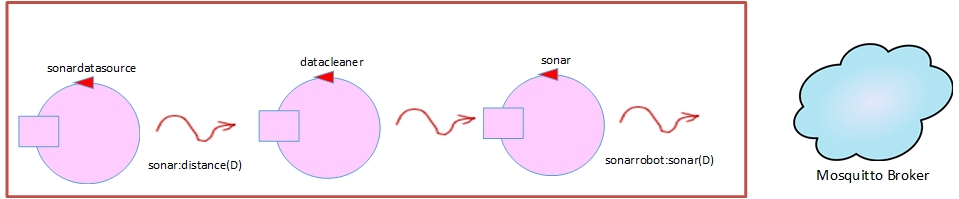

Sprint 2 Backlog
Starting point

Problem analysis
This Sprint aim is to develop and deeper describe the following entities:
PMS ;Transport trolley ;
An initial model of these entities, without interaction between them, can be found here.
PMS
From the backlog, the Park Manager Service needs to manage the transport trolley.
As we said in the previous Sprint, also in this case we believe that it is appropriate to introduce a new entity that is part of thePMS which aim is maintain the status and manage the interaction with the transport trolley .
The introduction of this new entity would allow the rest of the PMS to perform other tasks without blocking it.
As we said in the previous Sprint, also in this case we believe that it is appropriate to introduce a new entity that is part of the
Communication
Communication with the transport rolley can be done using a request-response or dispatch logic.
The use of requeste-response does not negatively affect the system if the entity discussed in the previous paragraph is introduced
Transport trolley
This component, as stated in the first analysis, moves within the parking area by moving to certain points:
Finally, the transport trolley in order to complete its tasks, needs a rapresentation of the parking area through a map.
The customer has made several resources available for this entity, which can be used in the project phase:
- HOME;
- INDOOR AREA;
- OUTDOOR AREA;
- 1 out of 6 SLOTS.
Finally, the transport trolley in order to complete its tasks, needs a rapresentation of the parking area through a map.
The customer has made several resources available for this entity, which can be used in the project phase:
- basicRobot: component that executes robot-move commands in a 'technology-independent way', with respect to the nature of the robot (virtual or real);
- basicStepRobot: actor which performs basic moves and step and returns info to its owner;
- plannerUtil: Kotlin object for planning the actions of a robot working in logical space (a map) composed of a set of square cells, each large as the robot.
Project
Starting from the logical architecture and from the product backlog we can now and design theWe maintain the hexagonal architecture, introduced in the previous sprint, developing port and adapter. This allows to keep separate the technology indipendent part from the technology dipendent one.
Technology indipendent
|
As said in the analysis phase, we introduce a new entity TrolleyController which takes care
of maintaining the current state of the To solve the problem indicated in the analysis phase relating to the stop of the transport trolley, a variable (nextTask) has been introduced that takes on different values relating to the task it has to carry out after being resumed. |

|
Outsonar
The outsonar have to be a physical sensor attached to a Raspberry Pi.
For the sake of simplify the developed and because a real outsonar can generate spurios data, we decided to use the code in
rasp2021 as a staring point..
The image below shows the model used in our application.
Last actor in the pipe
has been modified in order to emit events only if the new distance measured is different from the previously one. This feature allows the PMS to handle
less information.
In addiction, data from the sonar can be simulated using sonarSimulator.kt.
The configuration file allows to choose beetween the real and the simulated sonar.
The image below shows the model used in our application.
PMS interaction with outsonar
|
With regard to |

|
Weightsensor
|
Since there aren't particular requirements for the weightsensor, it has been developed as a mock object WeightSensorMock
that periodically emits events.
The data sent by the mock can be generated by manually input new values or randomly.
As previously described, the component integration strategy uses MQTT protocol and paho as a client. Due to same kind of interaction as the outsonar, we can basically use the same classes used with the oursonar and refactor variables and the data we need for this sensor. For that reason the WeightSensorAdapter.kt and the WeightSensorCallback.kt works as their outsonar counterparts. |
|
Thermometer
|
As for the weightsensor, the thermometer has been developed as a mock object ThermometerMock that periodically emits events. It works like the
WeightSensorMock but the value randomly generated range from -10 to 50 degrees. Again, due to the same type of interaction, we developed ThermometerSensorAdapter.kt and ThermometerCallback.kt reusing the code previously detailed. |
|
Testing
Since Sprint 2 is focused on the transport trolley, test plans will be carry out testing the "MACRO" moves priovously described (R2A, R2C/R3B, R2D/R2E/R3D, R3C),
without taking care on particular situation where the transport trolley can't start its task (R1/R3). These situation will be included in future sprints.
For that reason, we assumed the following starting assumptions:
For that reason, we assumed the following starting assumptions:
- INDOOR and OUTDOOR AREA are not engaged;
- FAN turned off;
- No Magager interaction;
- Transport trolley starts from home location;
- All parking slots are free.
TEST #1 - no queue task creation of an istance of adapter robot ->moveToIn check if coordinates(robot) == coordinates(INDOOR AREA) no task in queue check if coordinates(robot) == coordinates(HOME)
TEST #2 - complete cycle of tasks creation of an istance of adapter robot ->moveToIn check if coordinates(robot) == coordinates(INDOOR AREA) robot ->moveToSlotIn(3) check if coordinates(robot) == coordinates(1,3) robot ->moveToSlotOut(4) check if coordinates(robot) == coordinates(4,1) robot ->moveToOut check if coordinates(robot) == coordinates(OUTDOOR AREA) robot ->moveToHome check if coordinates(robot) == coordinates(HOME)
TEST #3 - halt functionality creation of an istance of adapter robot ->moveToIn check if coordinates(robot) == coordinates(INDOOR AREA) robot ->halt no task in queue robot ->resume check if coordinates(robot) == coordinates(HOME)
Summary point
Deployment
In this Sprint we decided to deploy the driven side which includes outsonar, thermometer and weightsensor,
while ports and adapters will be deployed in future Sprints.
Thermometer and weightsensor can be used by opening and running them with jupyter.
Regarding to theoutsonar , it has been deployed using gradle distZip command. The result of the deployment is a zip file outsonar.zip
that contains a bin directory with the executables. By default the system uses a real sonar and in that case sonarAlone.c needs to be compiled.
Alternatevely, by changing configuration file sonar2021ConfigKb.pl a virtual sonar can be used.
In addicition, the broker that receives events emitted by the sonar can be choose by editing sonaronrasp.pl.
To run the system on:
Thermometer and weightsensor can be used by opening and running them with jupyter.
Regarding to the
To run the system on:
- Windows: open a Command Prompt, set working directory to bin, run outsonar.bat;
- Unix: open a Bash Shell, set working directory to bin, run bash outsonar;
- MacOS: open a Terminal, set working directory to bin, run basicdevices;
Job task
| Member | Task done |
|---|---|
enrico.andrini2@studio.unibo.it |
|
giuseppe.cristaudo@studio.unibo.it |
|
filippo.manfreda@studio.unibo.it |
|
|
Sprint Review
During the discussion with the customer we faced the possibilty to use the observer pattern as a logic interaction instead of
the publish-subscribe we used. As analyst we think they are both good at satisfying our interction requirements with sensor. However,
we think publish-subscribe interaction suits best our needs because, as we said in our first analiys,
sensors doens't know who is going to use them, this specification is fully satisfied thanks to the presence of an intermediary: the broker. This means that the publisher (sensor) and subscriber
(adapter) are just loosely-coupled. Although the observer pattern allows you to not know a priori who the observers will be, they will be subsequently
disclosed to the sensors directly after the registration.
A closer look at this comparison can be found here.
Regarding the broker, even if now we rely on the remote broker hivemq, it will later be replaced by a local broker (Mosquitto).
Regarding the broker, even if now we rely on the remote broker hivemq, it will later be replaced by a local broker (Mosquitto).